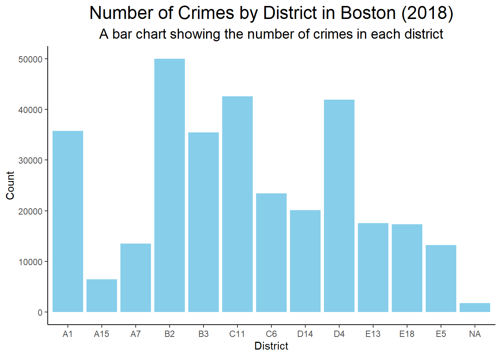
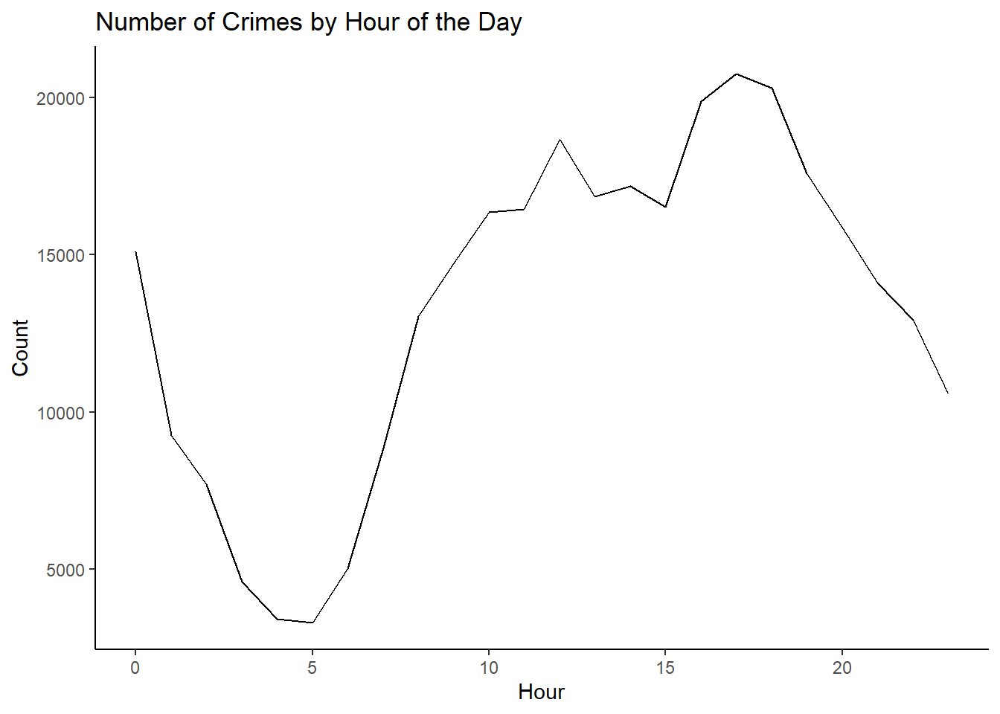
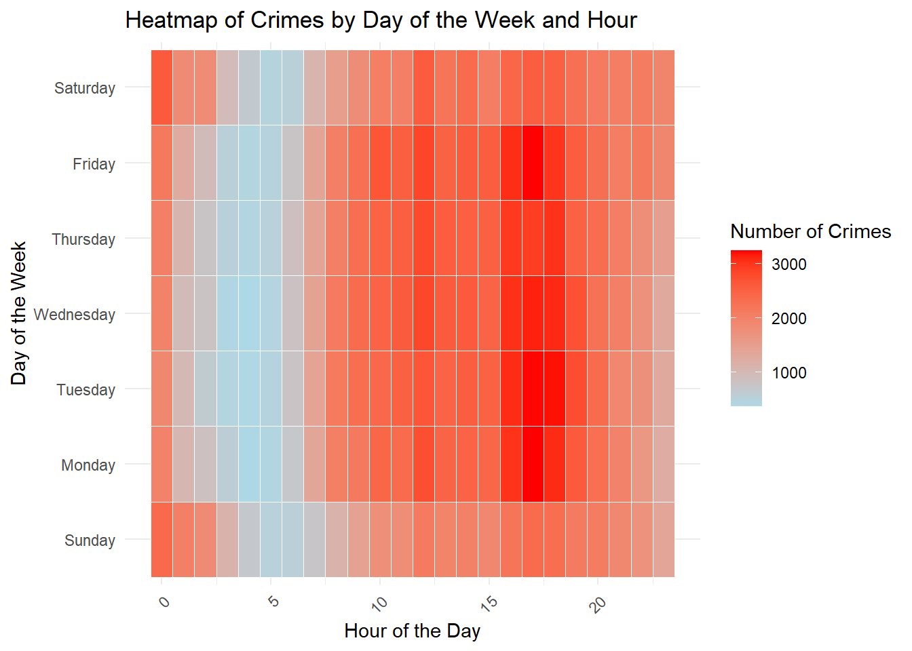

The primary questions addressed in this analysis revolve around understanding crime trends in Boston from June 14, 2015 to September 3, 2018.
The story focuses on identifying patterns in crime incidents, such as:
The types of crimes most frequently reported
Their distribution across different neighborhoods
Any noticeable trends observed over the specified period.
Data background
The dataset consists of crime incident reports provided by the Boston Police Department (BPD) through the Analyze Boston from June 14, 2015 to September 3, 2018.
It includes a set of essential fields and details about each incident, such as the type of crime, date, and location.
The data is structured to facilitate analysis of crime trends over time and across different areas of the city, offering a insightful overview of public safety and law enforcement responses in Boston during the specified timeframe.
The following objects are masked from 'package:stats':
filter, lag
The following objects are masked from 'package:base':
intersect, setdiff, setequal, union
library(lubridate)
Attaching package: 'lubridate'
The following objects are masked from 'package:base':
date, intersect, setdiff, union
# Load the data from csvdata <-read_csv("data/crime.csv", show_col_types =FALSE)# Split the OCCURRED_ON_DATE column into separate date and time columnsdata$OCCURRED_ON_DATE <-as.POSIXct(data$OCCURRED_ON_DATE, format ="%m-%d-%Y %H:%M")data$DATE <-as.Date(data$OCCURRED_ON_DATE)data$TIME <-format(data$OCCURRED_ON_DATE, "%H:%M")# Remove the original OCCURRED_ON_DATE columndata$OCCURRED_ON_DATE <-NULL# Remove the redundant Location columndata$Location <-NULL# Convert the UCR_PART column to a factordata$UCR_PART <-factor(data$UCR_PART)# View the updated datahead(data)
# A tibble: 6 × 17
INCIDENT_NUMBER OFFENSE_CODE OFFENSE_CODE_GROUP OFFENSE_DESCRIPTION DISTRICT
<chr> <chr> <chr> <chr> <chr>
1 I182070945 00619 Larceny LARCENY ALL OTHERS D14
2 I182070943 01402 Vandalism VANDALISM C11
3 I182070941 03410 Towed TOWED MOTOR VEHICLE D4
4 I182070940 03114 Investigate Property INVESTIGATE PROPER… D4
5 I182070938 03114 Investigate Property INVESTIGATE PROPER… B3
6 I182070936 03820 Motor Vehicle Accid… M/V ACCIDENT INVOL… C11
# ℹ 12 more variables: REPORTING_AREA <dbl>, SHOOTING <chr>, YEAR <dbl>,
# MONTH <dbl>, DAY_OF_WEEK <chr>, HOUR <dbl>, UCR_PART <fct>, STREET <chr>,
# Lat <dbl>, Long <dbl>, DATE <date>, TIME <chr>
Describe and show how you cleaned and reshaped the data:
The data given is fairly clean. However to turn it even cleaner for the analysis, we have: - Split the OCCURRED_ON_DATE column into separate date and time columns. - Removed the original OCCURRED_ON_DATE column. - Removed the redundant Location column. - Converted the UCR_PART column to a factor.
Individual figures
Figure 1: Number of crimes in each district (bar chart)
One interesting aspect of the data is the distribution of crimes across different districts. We can use this information to identify the safest as well as most crime-prone areas in the city.
library(ggplot2)# Count the number of crimes in each districtdistrict_crimes <- data %>%group_by(DISTRICT) %>%summarise(count =n())# Create a bar chartggplot(district_crimes, aes(x = DISTRICT, y = count)) +geom_bar(stat ="identity", fill ="skyblue") +labs(title ="Number of Crimes by District in Boston (2018)", subtitle ="A bar chart showing the number of crimes in each district", x ="District", y ="Count") +theme_classic() +theme(plot.title =element_text(hjust =0.5, size =18), plot.subtitle =element_text(hjust =0.5, size =14))

Describe and show how you created the first figure. Why did you choose this figure type?
We chose a bar chart for this figure because it is a simple and effective way to display categorical data, such as the number of crimes in each district.
And we chose bar charts are easy to understand and allow the viewer to quickly compare the values across different categories.
What did you do to ensure it follows Cairo’s principles from A Truthful Art and Robin Williams’s CRAP?
To ensure it follows Cairo’s principles from A Truthful Art and Robin Williams’s CRAP, we chose bar chart to effectively display categorical data, with a clean design that avoids 3D and other chartjunk. We used a clear and simple color scheme to enhance visual clarity, while avoiding unnecessary visual elements. We also applied informative labeling and a balanced layout , with a visual hierarchy created through contrast and a consistent design through repetative font and its size. Overall, the chart features an organized structure, thanks to the use of proximity.
Figure 2: Number of crimes by hour of the day (line chart)
library(ggplot2)# Count the number of crimes by hour of the dayhour_crimes <- data %>%group_by(HOUR) %>%summarise(count =n())# Create a line chartggplot(hour_crimes, aes(x = HOUR, y = count)) +geom_line() +labs(title ="Number of Crimes by Hour of the Day", x ="Hour", y ="Count") +theme_classic()

This graph shows the number of crimes that occurred at each hour of the day, with the x-axis representing the hour and the y-axis representing the count.
This line chart displays the number of crimes that occurred at each hour of the day, highlighting the trend of crime over the course of the day.
Figure 3: Number of crimes by day of the week and hour (heatmap)
# Load necessary libraries for visualizationlibrary(ggplot2)# Extract day of the week and hour from the DATE and TIME columnsdata$Day_of_Week <-weekdays(data$DATE)data$Hour <-as.numeric(format(as.POSIXct(data$TIME, format ="%H:%M"), "%H"))# Count the number of crimes by Day of the Week and Hourcrime_heatmap_data <- data %>%group_by(Day_of_Week, Hour) %>%summarise(Crime_Count =n(), .groups ='drop')# Reorder the days of the week for better visualizationcrime_heatmap_data$Day_of_Week <-factor(crime_heatmap_data$Day_of_Week,levels =c("Sunday", "Monday", "Tuesday", "Wednesday", "Thursday", "Friday", "Saturday"))# Create the heatmapggplot(crime_heatmap_data, aes(x = Hour, y = Day_of_Week, fill = Crime_Count)) +geom_tile(color ="white") +scale_fill_gradient(low ="lightblue", high ="red") +labs(title ="Heatmap of Crimes by Day of the Week and Hour",x ="Hour of the Day",y ="Day of the Week",fill ="Number of Crimes") +theme_minimal() +theme(axis.text.x =element_text(angle =45, hjust =1))

This heatmap chart gives even a further insight and shows the frequency of crimes by day of the week and hour of the day, which can help identify patterns in crime occurrence.
Final figure:
Show the final figure that you created in Inkscape or Illustrator/InDesign. Describe why you designed it the way you did? Why did you choose those colors, fonts, and other design elements? Does it convey truth?